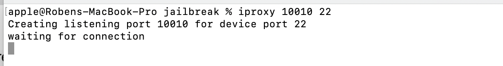

ssh登录iphone[逆向01]
在iOS逆向工程中，经常需要通过命令行来对iphone下达指令。
iOS下有两个常用的账户：root、mobile
root:最高权限
mobile:普通权限，只能操作一些普通文件
iOS设备对外提供ssh服务的端口号是22
iOS越狱设备通过Cydia安装OpenSSH工具
无线模式
这种模式需要保证iOS设备和mac在同一局域网下
在mac终端输入$ssh 账户@ip地址 即可（初始密码：alpine 后续修改密码等详见Cydia中[OpenSSH 访问教程]、[Root 密码教程]）
1 | |
有线模式
该种方式采用的是Mac上的一个服务程序usbmuxd(/System/Library/PrivateFrameworks/MobileDevice.framework/Resources/usbmuxd)
原https://cgit.sukimashita.com/usbmuxd.git/snapshot/usbmuxd-1.0.8.tar.gz在macos 12.3+ 上不适用 这里说另外一个iproxy
安装usbmuxd工具包
1 | |
映射iphone22端口到mac并监听
1 | |
登录iOS设备
不要关闭step2的窗口，command+T 另开个终端界面
1 | |
退出登录
1 | |
免密登陆
创建密钥
1 | |
将生成的公钥追加到授权文件尾部（这里如果iOS 设备没有.ssh 文件夹，需要手动创建）
1 | |
登录iOS设备执行
1 | |
退出设备再次登录就不需要密码了
ssh登录iphone[逆向01]
http://qingleilo.cn/2022/08/22/ssh登录iphone-逆向01/